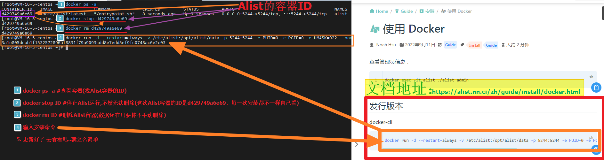
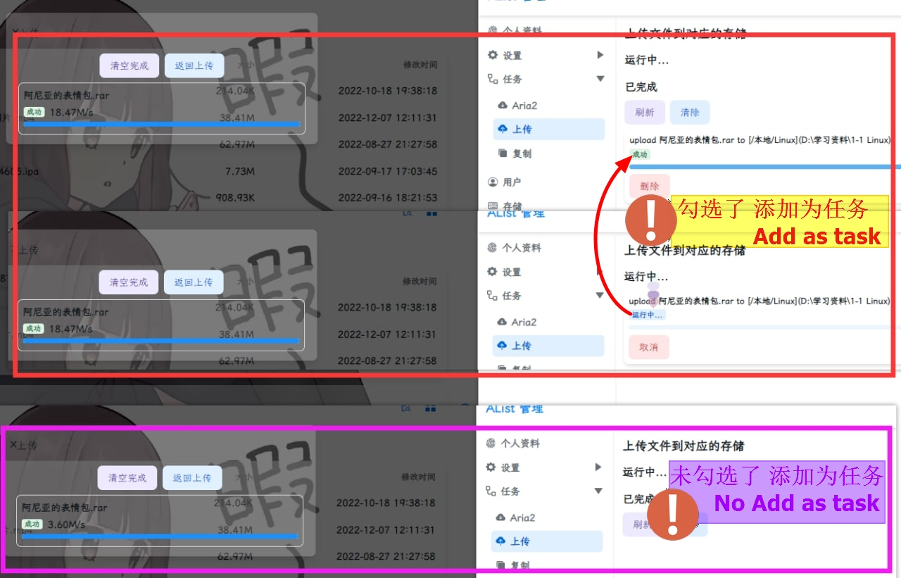

我为什么在网盘聚合这条路上最终还是用回了 Alist
网盘聚合工具不算少，但真正跑在生产环境、挂载十来个驱动还不崩的，Alist 是少数几个让我放着不敢删的那一个。这篇聊聊它在同类里的位置、做得好的地方和没那么好的地方。
网盘聚合这个赛道，从早期的 Cloudreve、Lobe，到后来各种第三方客户端和自托管方案，真正能走到今天还在活跃迭代的屈指可数。Alist 不是最早的，但肯定是目前覆盖面最广、社区最活跃的之一。如果你之前没折腾过这类东西，把它理解成一个「把各种网盘塞进同一份文件树」的服务——到alist官网看一眼就明白了，装一台机器上，阿里云盘、115、夸克、甚至 S3 对象存储，全部挂进去，统一通过一个 Web 界面浏览、搜索、上传下载，对外还能走 WebDAV 给播放器挂载。
我前后试过三四年这类工具，从最早用 Cloudreve 跑到后来换 Lobe，再回到 Alist，中间也用过一些基于 rclone 套壳的方案。现在生产环境里稳定挂着它，偶尔还会被朋友问起——"你那个多网盘怎么弄的"，每次都直接把地址甩过去。这篇不是官方说明书，是我这个老用户的对比评测：同类里它排在什么位置、哪些地方确实做得好、哪些地方你得有心理预期。
同类格局：它处在什么位置
先给个坐标系。网盘聚合工具大致分三档：
大厂出品的一站式方案，比如阿里云盘自己的多账号管理、115 家庭组。优点是官方 API 稳定、不会被封；缺点是只能管自家网盘，跨平台就没辙了——你没法让阿里云盘帮你挂一个夸克账号。
纯挂载层方案，比如 rclone + 各种 WebDAV 网关。rclone 本身是瑞士军刀，驱动多到可怕，但配置门槛极高，非技术用户基本劝退，而且没有统一的 Web 界面，每次查个文件都要敲命令或配桌面客户端。
自托管一站式方案，这一档就是 Alist、Cloudreve、ZotFile 这些。它们的目标是：给你一个好看的 Web 界面，背后自动处理各种网盘的授权、刷新令牌、限流、签名防盗链这些脏活累活。Alist 是这一档里驱动数量最多、更新频率最高、社区最活跃的。
一句话定位：如果你要跨三家以上的网盘，同时不想跟 rclone 的配置文件较劲，Alist 是目前体验最完整的自托管选项。
差异化：三个别家没有或做得明显更好的地方
部署的灵活度真的很夸张
Alist 提供了四条部署路线，每条都认真做了：
- Linux 服务器一条一键脚本解决，自动注册 systemd 服务，升级卸载也一条命令；
- NAS 用户首选 Docker，数据卷映射到 NAS 目录，升级就是换个镜像拉下来；
- 想完全掌控的可以从官方下载拿二进制解压即跑；
- Windows 桌面用户甚至有付费的桌面版，双击就行不用碰终端。
我有个朋友用群晖，一开始纠结要不要专门开 Docker，后来发现 Alist 官方镜像就是为 NAS 场景优化过的，数据卷映射的alist文档写得特别详细。另一个朋友租了台便宜的 VPS，直接跑了一键脚本，装完两分钟就能访问。这种「无论你是什么环境都有对应方案」的覆盖度，在同类里确实少见——很多竞品只认真做 Docker 方案，或者只认 Linux 服务器。

跨盘复制的「秒传」实现
这个是我觉得 Alist 做得特别聪明的一点。你在阿里云盘和 115 之间复制同一个文件，它不是老老实实下载再上传，而是会先做哈希比对——两边的哈希值对上了，直接标记完成，几 GB 的电影瞬间就「复制完了」。原理不复杂，但在同类工具里很少有认真实现这个的，要么根本不支持跨盘操作，要么老老实实走中转。
当然，秒传只在部分驱动对之间有效，比如阿里云盘和 115 互秒，但即便没有秒传，它的上传面板里还有个「添加为任务」选项，勾上之后传输进后台队列，网页关掉继续传。这个细节在大文件场景下特别实用——我经常睡前挂几个 10GB 以上的任务，第二天起来发现队列清空了。

访客控制的三级方案
很多人用 Alist 是为了小圈子分享，但又不想让陌生人直接看光全部文件。Alist 给了三种不同力度的方案，而不是只给一个「开关」：
- 最轻量：给根目录加个密码，访客进来输密码才能看；
- 中等：给 guest 账号指一个空目录，访客进来只见一页说明，登录后才看到真实内容；
- 最严格：直接停用 guest，全站强制登录，纯私有。
这三种方案分别对应小圈子分享、公开演示、纯私人站点三种截然不同的场景。我见过不少 Alist 实例用的是第二种——首页是一页自我介绍和几个下载链接，藏好的文件在登录后才出现，既不失礼节又保护了隐私。
取舍：为这些优势付出了什么
说点不好听的。Alist 不是银弹，有些地方你得有心理预期。
部署机带宽是硬瓶颈。 跨盘复制、上传下载、网页预览，所有数据都要先经过你的部署机中转。1080P 视频在线播放需要至少 5Mbps 的上行，4K 更不用说——你家的宽带 VPS 上行够不够，是第一道门槛。上传面板里那个「服务器中转」不是说说而已，我见过有人忘了调反向代理的 client_max_body_size，结果大文件上传全报 413。
预览能力受浏览器限制。 Alist 能给你提供文件，但浏览器不支持的编码它也没办法。H.265 视频、AC3 音频，大部分浏览器原生不支持；微软 Office 在线查看器只认公网域名、80/443 端口，你在内网部署的话这个功能直接废掉。PDF 预览要求 HTTPS + CORS，少一个都不行。这些不是 Alist 的 bug，是平台限制，但新用户经常踩坑。
驱动的稳定性参差不齐。 阿里云盘驱动的开放平台 API 用起来很稳，但一些小众网盘驱动可能因为官方 API 变动突然挂掉。夸克驱动之前就因为官方改了接口签名挂了好几天，社区连夜提交的 PR 才修好。如果你依赖某个小众驱动，得做好随时切换的心理准备。
选购结论
最后给个明确的推荐。
选 Alist 的情况： 你有两个以上的网盘需要统一管理，愿意花半小时部署一台服务器（或者有 NAS），想要一个好看又好用的统一入口，对外还想走 WebDAV 给播放器用。这是 Alist 的舒适区，别的工具很少能同时覆盖这些需求。
不选 Alist 的情况： 你只用一家网盘，那官方客户端够了；你完全不想碰服务器和 Docker，那付费桌面版可以试试但别对功能抱太高期待；你需要极其硬核的文件管理和自定义脚本，那 rclone + 自建 WebDAV 网关可能更灵活——虽然门槛高一截。
我自己的生产环境里 Alist 已经跑了快一年，中间只因为夸克驱动的 API 变动出过一次问题，其他时候稳定得像不存在。这种存在感低恰恰是它最值得推荐的地方——装好之后你不会天天想着它，但一旦哪天它真挂了，你会发现之前以为的「可有可无的聚合层」其实已经成了你文件管理的基础设施。如果想搭一份同款，驱动配置和部署说明我在三个平台都同步了一份——GitHub是主仓库，Gitee和GitCode留着国内备份，哪个能访问用哪个。